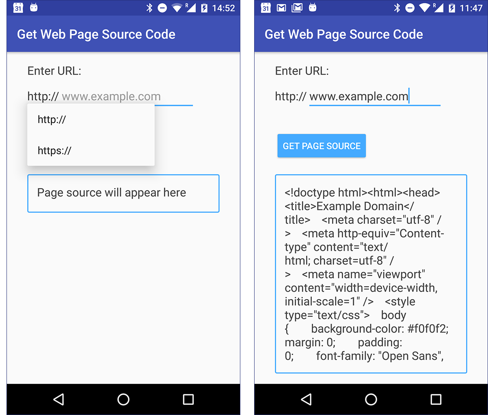

この実践的なコードラボはユニット 3: Android Developer Fundamentals (Version 2) コースのバックグラウンドでの作業の一部です。コードラボを順番に進めていくことで、このコースを最大限に活用することができます。
注：このコースでは、「codelab」と「practical」という用語を使い分けています。
序章
この実習では、シンプルな REST API を使用してインターネットからデータを取得するバックグラウンドタスクを開始するためにAsyncTask を使用します。Google APIs Explorer を使用して Books API をクエリし、このクエリを AsyncTask を使用してワーカースレッドに実装し、結果を UI に表示します。
その後、AsyncTaskLoaderを使って同じバックグラウンドタスクを再実装すれば、UIを更新するためのより効率的な方法となります。
すでに知っておくべきこと
できるようになるはずです。
TextViewを追加します。onClick 機能を実装します。AsyncTaskを実装し、その結果をUIに表示します。あなたが学ぶこと
AsyncTaskLoader の実装方法。あなたがすること
アプリを修正し、AsyncTask の代わりに AsyncTaskLoader を使用するようにしました。EditTextとButtonを含むアプリを作ります。
EditTextに本の名前を入力してボタンをタップします。AsyncTask を実行します。アプリが動作したら、AsyncTaskクラスの代わりにAsyncTaskLoaderを使用するようにアプリを修正します。
この実習では、Google Books APIを使用して、本の著者やタイトルなどの本に関する情報を検索します。Books API は、REST API を使用して Google Book Search サービスへのプログラム的なアクセスを提供します。これは、Google Books で手動で検索を実行する際に裏で使用されるのと同じサービスです。ブラウザでGoogle APIs ExplorerとGoogle Book Searchを使用して、Androidアプリが期待通りの結果を得ているかどうかを確認することができます。
1.1 Books APIリクエストの送信
Control+F（Macの場合はCommand+F）を押します。本の検索を行うBooks API機能のパラメータを一覧にしたWebページが表示されるはずです。
qフィールドには、本の名前または部分的な本の名前、例えば"Romeo"を入力します。qパラメータは唯一の必須フィールドです。maxResults]フィールドに10を入力して、一致するブックの上位10冊に結果を制限します。printType フィールドに books と入力して、印刷中の本に結果を限定します。HTPPリクエストは、統一されたリソース識別子(URI)である。URIはリソースを識別する文字列であり、URLはWebリソースを識別するある種のURIである。Books APIの場合、リクエストはURLである。フォームに入力した検索パラメータは URL の ?
URL の最後にある API キーフィールドに注目してください。セキュリティ上の理由から、パブリックAPIにアクセスする場合は、APIキーを取得してリクエストに含める必要があります。Books APIはAPIキーを必要としないため、アプリではリクエストURIのこの部分を省略することができます。
1.2 Books APIレスポンスの分析
クエリに対するレスポンスはページの下部にあります。レスポンスは、API クエリのレスポンスの一般的なフォーマットであるJSON フォーマットを使用しています。APIs ExplorerのWebページでは、JSONコードは人間が読めるようにきれいにフォーマットされています。アプリでは、JSON レスポンスは API サービスから 1 つの文字列として返され、必要な情報を抽出するためにその文字列を解析する必要があります。
レスポンスは、カンマで区切られた名前と値のペアで構成されています。例えば、"kind"。"books#volumes"は名前と値のペアで、"kind"が名前、"books#volumes"が値です。これがJSON形式です。
"著者名"の値を探します。この結果は、複数の値を含むことができる配列であることに注意してください。書籍検索には、検索文字列を含むすべての書籍が含まれており、各書籍を表す複数のオブジェクトが存在します。この実践では、レスポンスの最初の項目のタイトルと著者名のみを返します。
Books APIに慣れてきたところで、アプリのレイアウトを設定してみましょう。
2.1 プロジェクトとユーザーインターフェース（UI）の作成
activity_main.xmlレイアウトファイルを開きます。テキスト］タブをクリックします。トップレベル ConstraintLayout に layout_margin 属性を追加します。android:layout_margin="16dp"TextViewを削除します。ビュー | 属性 | 値 |
テキストビュー |
|
|
編集テキスト |
|
|
ボタン |
|
|
テキストビュー |
|
|
テキストビュー |
|
|
strings.xml ファイルに、以下の文字列リソースを追加します。<string name="instructions">Enter a book name to find out who wrote the book. </string>
<string name="button_text">Search Books</string>
<string name="input_hint">Book Title</string>searchBooks() メソッドは MainActivity にまだ実装されていないため、ボタンの onClick 属性は黄色で強調表示されます。MainActivityでメソッドのスタブを作成するには、ハイライトされたテキストにカーソルを置き、Alt+Enter（Macの場合はOption+Enter）を押して、「MainActivity」で「Create 'searchBooks(View)'」を選択します。activity_main.xmlのソリューションコードです。
<?xml version="1.0" encoding="utf-8"?>
<android.support.constraint.ConstraintLayout
xmlns:android="http://schemas.android.com/apk/res/android"
xmlns:app="http://schemas.android.com/apk/res-auto"
xmlns:tools="http://schemas.android.com/tools"
android:layout_width="match_parent"
android:layout_height="match_parent"
android:layout_margin="16dp"
tools:context=".MainActivity">
<TextView
android:id="@+id/instructions"
android:layout_width="match_parent"
android:layout_height="wrap_content"
android:text="@string/instructions"
android:textAppearance="@style/TextAppearance.AppCompat.Title"
app:layout_constraintStart_toStartOf="parent"
app:layout_constraintTop_toTopOf="parent"/>
<EditText
android:id="@+id/bookInput"
android:layout_width="match_parent"
android:layout_height="wrap_content"
android:layout_marginTop="8dp"
android:hint="@string/input_hint"
android:inputType="text"
app:layout_constraintEnd_toEndOf="parent"
app:layout_constraintStart_toStartOf="parent"
app:layout_constraintTop_toBottomOf="@+id/instructions"/>
<Button
android:id="@+id/searchButton"
android:layout_width="wrap_content"
android:layout_height="wrap_content"
android:layout_marginTop="8dp"
android:onClick="searchBooks"
android:text="@string/button_text"
app:layout_constraintStart_toStartOf="parent"
app:layout_constraintTop_toBottomOf="@+id/bookInput"/>
<TextView
android:id="@+id/titleText"
android:layout_width="wrap_content"
android:layout_height="wrap_content"
android:layout_marginTop="16dp"
android:textAppearance=
"@style/TextAppearance.AppCompat.Headline"
app:layout_constraintStart_toStartOf="parent"
app:layout_constraintTop_toBottomOf="@+id/searchButton" />
<TextView
android:id="@+id/authorText"
android:layout_width="wrap_content"
android:layout_height="wrap_content"
android:layout_marginTop="8dp"
android:textAppearance=
"@style/TextAppearance.AppCompat.Headline"
app:layout_constraintStart_toStartOf="parent"
app:layout_constraintTop_toBottomOf="@+id/titleText"/>
</android.support.constraint.ConstraintLayout>2.2 ユーザーの入力を得る
Books APIをクエリするには、EditTextからユーザー入力を取得する必要があります。
MainActivity.javaで、EditText、author TextView、title TextViewのメンバ変数を作成します。private EditText mBookInput;
private TextView mTitleText;
private TextView mAuthorText;onCreate() でビューに初期化します。@Override
protected void onCreate(Bundle savedInstanceState) {
super.onCreate(savedInstanceState);
setContentView(R.layout.activity_main);
mBookInput = (EditText)findViewById(R.id.bookInput);
mTitleText = (TextView)findViewById(R.id.titleText);
mAuthorText = (TextView)findViewById(R.id.authorText);
}searchBooks() メソッドで、EditText ビューからテキストを取得します。テキストを文字列に変換し、変数に代入します。public void searchBooks(View view) {
// Get the search string from the input field.
String queryString = mBookInput.getText().toString();
}2.3 空の AsyncTask クラスの作成
これで、インターネットに接続してBooks APIを使用する準備ができました。このタスクでは、ネットワークへの接続を処理するために FetchBook という新しいAsyncTask サブクラスを作成します。
ネットワーク接続が遅くなると、アプリが不安定になったり遅くなったりすることがあります。このため、UIスレッドでネットワーク接続を行わないようにしてください。UI スレッドでネットワーク接続を試みると、Android ランタイムがNetworkOnMainThreadException を発生させて、それが良くないことを警告することがあります。
代わりに、ネットワーク接続を行うには、AsyncTask のサブクラスを使用します。AsyncTask には、入力パラメータ型、進捗インジケータ型、結果型の 3 つの型のパラメータが必要です。
FetchBook という名前の Java クラスを作成し、AsyncTask を継承します。クラスの汎用型パラメータは String、進捗インジケータがないのでVoid、JSONレスポンスが文字列なのでString)public class FetchBook extends AsyncTask<String, Void, String> {
}doInBackground``() を実装します。これを行うには、赤い下線のテキストにカーソルを置き、Alt+Enter（Macの場合はOption+Enter）を押して、メソッドの実装を選択します。doInBackground()を選択し、OKをクリックします。パラメータと戻り値の型が正しいことを確認してください。(このメソッドは、String オブジェクトの変数リストを受け取り、String を返します)。
@Override
protected String doInBackground(String... strings) {
return null;
}Ctrl+O キーを押します。onPostExecute() メソッドを選択して、メソッド定義をクラスに挿入します。onPostExecute() メソッドは、パラメータとして String を受け取り、void を返します。@Override
protected void onPostExecute(String s) {
super.onPostExecute(s);
}MainActivity 内の TextView オブジェクトに結果を表示するには、AsyncTask 内でこれらのテキスト・ビューにアクセスする必要があります。結果を表示する 2 つのテキスト・ビューへの参照用にWeakReference メンバ変数を作成します。private WeakReference<TextView> mTitleText;
private WeakReference<TextView> mAuthorText;注意: 前回の実習で学んだように、アクティビティからのコンテキストの漏洩を避けるために、(実際のTextViewオブジェクトではなく)WeakReferenceオブジェクトをこれらのテキストビューに使用します。弱い参照は、必要に応じてその参照によって保持されているオブジェクトをゴミ箱に回収できるようにすることで、メモリリークを防ぎます。
MainActivityからTextViewビューを含むFetchBookクラスのコンストラクタを作成し、そのコンストラクタ内のメンバ変数を初期化します。FetchBook(TextView titleText, TextView authorText) {
this.mTitleText = new WeakReference<>(titleText);
this.mAuthorText = new WeakReference<>(authorText);
}FetchBookのソリューションコードです。
public class FetchBook extends AsyncTask<String,Void,String> {
private WeakReference<TextView> mTitleText;
private WeakReference<TextView> mAuthorText;
public FetchBook(TextView mTitleText, TextView mAuthorText) {
this.mTitleText = new WeakReference<>(titleText);
this.mAuthorText = new WeakReference<>(authorText);
}
@Override
protected String doInBackground(String... strings) {
return null;
}
@Override
protected void onPostExecute(String s) {
super.onPostExecute(s);
}
}2.4 NetworkUtilsクラスを作成し、URIを構築する
インターネット接続を開き、Books APIに問い合わせをする必要があります。この機能はおそらくまた使うことになるでしょうから、この機能を持ったユーティリティクラスを作成したり、自分の都合に合わせて便利なサブクラスを開発したりすると良いでしょう。
このタスクでは、NetworkUtilsというヘルパークラスでインターネットに接続するためのコードを書きます。
NetworkUtils という名前の新しい Java クラスを作成します。NetworkUtils クラスは他のクラスからは拡張しません。LOG_TAG変数を作成します。private static final String LOG_TAG =
NetworkUtils.class.getSimpleName();getBookInfo()という静的メソッドを作成します。getBookInfo()メソッドは、検索語をStringパラメータとして受け取り、先ほど調べたAPIからJSON Stringレスポンスを返します。static String getBookInfo(String queryString){
}getBookInfo() メソッドに以下のローカル変数を作成します。これらの変数は、インターネットへの接続、受信データの読み込み、レスポンス文字列の保持に必要です。HttpURLConnection urlConnection = null;
BufferedReader reader = null;
String bookJSONString = null;getBookInfo()メソッドの最後に、bookJSONStringの値を返します。return bookJSONString;getBookInfo() で、ローカル変数の後と return 文の前に、スケルトンの try/catch/finally ブロックを追加。tryブロックでは、URIを構築してクエリを発行します。catchブロックでは、リクエストの問題を処理します。最後のブロックでは、JSONデータの受信が終わったらネットワーク接続を閉じます。
try {
//...
} catch (IOException e) {
e.printStackTrace();
} finally {
//...
}NetworkUtils クラスの先頭、LOG_TAG 定数の下に以下のメンバ定数を作成します。// Base URL for Books API.
private static final String BOOK_BASE_URL = "https://www.googleapis.com/books/v1/volumes?";
// Parameter for the search string.
private static final String QUERY_PARAM = "q";
// Parameter that limits search results.
private static final String MAX_RESULTS = "maxResults";
// Parameter to filter by print type.
private static final String PRINT_TYPE = "printType";Books API ウェブページのリクエストで見たように、すべてのリクエストは同じ URI で始まります。リソースのタイプを指定するには、そのベースのURIにクエリパラメータを追加します。これらのクエリパラメータをすべて定数に分離して、Uri.Builder を使って結合し、異なる URI で再利用できるようにするのが一般的です。UriクラスにはUri.buildUpon()という便利なメソッドがあります。
このアプリでは、クエリの速度を上げるために、返される結果の数と種類を制限します。クエリを制限するには、印刷された本だけを探します。
getBookInfo() メソッドでは、try ブロックにリクエスト URI を構築します。Uri builtURI = Uri.parse(BOOK_BASE_URL).buildUpon()
.appendQueryParameter(QUERY_PARAM, queryString)
.appendQueryParameter(MAX_RESULTS, "10")
.appendQueryParameter(PRINT_TYPE, "books")
.build(); tryブロック内では、URIをURLオブジェクトに変換します。URL requestURL = new URL(builtURI.toString());2.5 依頼をする
この API リクエストでは、HttpURLConnection クラスを InputStream、BufferedReader、および StringBuffer と組み合わせて使用し、Web から JSON レスポンスを取得します。プロセスが失敗し、InputStream または StringBuffer が空の場合、リクエストは NULL を返し、クエリが失敗したことを示します。
getBookInfo() メソッドの try ブロックで、URL 接続を開いてリクエストを行います。urlConnection = (HttpURLConnection) requestURL.openConnection();
urlConnection.setRequestMethod("GET");
urlConnection.connect();InputStream、BufferedReader、およびStringBuilderを使用して、接続からのレスポンスをセットアップします。// Get the InputStream.
InputStream inputStream = urlConnection.getInputStream();
// Create a buffered reader from that input stream.
reader = new BufferedReader(new InputStreamReader(inputStream));
// Use a StringBuilder to hold the incoming response.
StringBuilder builder = new StringBuilder();String line;
while ((line = reader.readLine()) != null) {
builder.append(line);
// Since it's JSON, adding a newline isn't necessary (it won't
// affect parsing) but it does make debugging a *lot* easier
// if you print out the completed buffer for debugging.
builder.append("\n");
}注意: whileループは、入力された行を2つのステップでビルダ文字列に追加します: 1つは応答データの行のためのステップ、もう1つは新しい行文字("\n")を追加するためのステップです。
この改行はレスポンスのJSONパースには影響しませんが、ログで見たときにレスポンスをデバッグするのがとても楽になります。
null を返します。if (builder.length() == 0) {
// Stream was empty. No point in parsing.
return null;
}StringBuilder オブジェクトを String に変換して bookJSONString 変数に格納します。bookJSONString = builder.toString();
BufferedReader の両方を閉じます。finally {
if (urlConnection != null) {
urlConnection.disconnect();
}
if (reader != null) {
try {
reader.close();
} catch (IOException e) {
e.printStackTrace();
}
}
}注意: 接続が何らかの理由で失敗するたびに、このコードはnull
を返します。これは、FetchBook クラスの onPostExecute()
が入力パラメータに null 文字列がないかどうかをチェックして、失敗をユーザに知らせなければならないことを意味します。
ユーザーは接続に失敗した理由がわからないため、このエラー処理戦略は単純です。本番アプリのためのより良いソリューションは、ユーザーが有益なフィードバックを得られるように、障害の各ポイントを異なる方法で処理することです。
bookJSONString変数の値をログに出力します。Log.d(LOG_TAG, bookJSONString);FetchBookでは、doInBackground()メソッドを修正して、システムから渡されたparams引数から取得した検索語を渡してNetworkUtils.getBookInfo()メソッドを呼び出すようにします。(検索語は文字列配列の最初の値です。) このメソッドの結果を返します。(この行は、NULL リターンを置き換えます)。return NetworkUtils.getBookInfo(strings[0]);MainActivityで、searchBooks()メソッドの最後にこの行を追加して、execute()メソッドとクエリ文字列でバックグラウンドタスクを起動します。new FetchBook(mTitleText, mAuthorText).execute(queryString);Caused by: java.lang.SecurityException: Permission denied (missing INTERNET permission?)原因: java.lang.SecurityException.Permission denied (INTERNET 権限がありませんか？)
このエラーは、Androidのマニフェストにインターネットへのアクセス許可が含まれていないことを示しています。インターネットに接続するとセキュリティ上の問題が発生するため、アプリにはデフォルトで接続性がありません。次のタスクでは、マニフェストにインターネットアクセス許可を追加します。
2.6 インターネットのパーミッションを追加する
AndroidManifest.xmlファイルを開きます。<uses-permission android:name="android.permission.INTERNET" />
<uses-permission
android:name="android.permission.ACCESS_NETWORK_STATE" />2.7 JSON 文字列を解析する
クエリに対するJSONレスポンスが得られたので、結果を解析して、アプリのUIに表示したい情報を抽出する必要があります。Javaには、JSONタイプのデータを解析して処理するのに役立つクラスがコアAPIにあります。UIの更新と同様に、この処理はFetchBookクラスのonPostExecute()メソッドで行われます。
doInBackground() メソッドが期待した JSON 文字列を返さない可能性があります。たとえば、try/catch が失敗して例外が発生したり、ネットワークがタイムアウトしたり、その他の未処理のエラーが発生したりするかもしれません。このような場合、JSON のパースに失敗して例外が発生します。このようなケースに対処するには、try/catch ブロックで JSON 解析を行い、不正確なデータや不完全なデータが返された場合に対処します。
FetchBook クラスの onPostExecute() メソッドで、super の呼び出しの下に try/catch ブロックを追加します。try {
//...
} catch (JSONException e) {
e.printStackTrace();
}tryブロックの中では、JSONObjectとJSONArrayというクラスを使って、結果文字列から項目のJSON配列を取得します。JSONObject jsonObject = new JSONObject(s);
JSONArray itemsArray = jsonObject.getJSONArray("items");int i = 0;
String title = null;
String authors = null;itemsArray配列を反復処理し、各書籍のタイトルと著者情報をチェックします。ループごとに、著者とタイトルの両方が見つかったかどうかをテストし、見つかった場合はループを終了します。こうすることで、タイトルと著者の両方を持つエントリのみが表示されます。while (i < itemsArray.length() &&
(authors == null && title == null)) {
// Get the current item information.
JSONObject book = itemsArray.getJSONObject(i);
JSONObject volumeInfo = book.getJSONObject("volumeInfo");
// Try to get the author and title from the current item,
// catch if either field is empty and move on.
try {
title = volumeInfo.getString("title");
authors = volumeInfo.getString("authors");
} catch (Exception e) {
e.printStackTrace();
}
// Move to the next item.
i++;
}
注意: ループはレスポンスの最初のマッチで終了します。他にも回答があるかもしれませんが、このアプリは最初の回答のみを表示します。
TextViewオブジェクトへの参照はWeakReferenceオブジェクトなので、get()メソッドを使って参照を解除する必要があります。if (title != null && authors != null) {
mTitleText.get().setText(title);
mAuthorText.get().setText(authors);
}TextViewを"結果なし"の文字列リソースに設定し、著者のTextViewをクリアします。} else {
mTitleText.get().setText(R.string.no_results);
mAuthorText.get().setText("");
}TextViewを"結果なし"の文字列リソースに設定し、著者のTextViewをクリアします。} catch (Exception e) {
// If onPostExecute does not receive a proper JSON string,
// update the UI to show failed results.
mTitleText.get().setText(R.string.no_results);
mAuthorText.get().setText("");
e.printStackTrace();
}no_results リソースを strings.xml に追加します。<string name="no_results">"No Results Found"</string>解答コード。
@Override
protected void onPostExecute(String s) {
super.onPostExecute(s);
try {
// Convert the response into a JSON object.
JSONObject jsonObject = new JSONObject(s);
// Get the JSONArray of book items.
JSONArray itemsArray = jsonObject.getJSONArray("items");
// Initialize iterator and results fields.
int i = 0;
String title = null;
String authors = null;
// Look for results in the items array, exiting
// when both the title and author
// are found or when all items have been checked.
while (i < itemsArray.length() &&
(authors == null && title == null)) {
// Get the current item information.
JSONObject book = itemsArray.getJSONObject(i);
JSONObject volumeInfo = book.getJSONObject("volumeInfo");
// Try to get the author and title from the current item,
// catch if either field is empty and move on.
try {
title = volumeInfo.getString("title");
authors = volumeInfo.getString("authors");
} catch (Exception e) {
e.printStackTrace();
}
// Move to the next item.
i++;
}
// If both are found, display the result.
if (title != null && authors != null) {
mTitleText.get().setText(title);
mAuthorText.get().setText(authors);
} else {
// If none are found, update the UI to
// show failed results.
mTitleText.get().setText(R.string.no_results);
mAuthorText.get().setText("");
}
} catch (Exception e) {
// If onPostExecute does not receive a proper JSON string,
// update the UI to show failed results.
mTitleText.get().setText(R.string.no_results);
mAuthorText.get().setText("");
}
}今、本のAPIを使って本の検索を実行する機能的なアプリがあります。しかし、いくつかのことが期待通りに動作しません。
AsyncTaskがアクティビティから切り離されてしまい、結果をUIに反映させることができなくなります。このセクションの最初の2つの問題と、タスク4の最後の問題を修正します。
3.1 キーボードを非表示にしてTextViewを更新する
検索のユーザーエクスペリエンスは直感的ではありません。ユーザーがボタンをタップしてもキーボードは表示されたままで、ユーザーはクエリが進行中であることを知る方法がありません。
1つの解決策は、プログラムでキーボードを非表示にして、クエリが実行されている間に結果のテキストビューの1つを更新して"Load..."を読むことです。
MainActivity で、queryString の定義の後、searchBooks() メソッドに以下のコードを追加します。このコードは、ユーザーがボタンをタップしたときにキーボードを非表示にします。InputMethodManager inputManager = (InputMethodManager)
getSystemService(Context.INPUT_METHOD_SERVICE);
if (inputManager != null ) {
inputManager.hideSoftInputFromWindow(view.getWindowToken(),
InputMethodManager.HIDE_NOT_ALWAYS);
}FetchBookタスクを実行する呼び出しのすぐ下に、タイトルのTextViewをローディングメッセージに変更し、著者のTextViewをクリアするコードを追加します。new FetchBook(mTitleText, mAuthorText).execute(queryString);
mAuthorText.setText("");
mTitleText.setText(R.string.loading);strings.xmlに追加します。<string name="loading">Loading...</string>
3.2 ネットワークの状態と空の検索フィールドを管理する場合
アプリがネットワークを使用するときは常に、ネットワーク接続が利用できない可能性に対処する必要があります。ネットワークへの接続を試みる前に、アプリはネットワーク接続の状態を確認する必要があります。また、ユーザーがクエリ文字列を入力していない場合は、Books APIへのクエリを試みるべきではありません。
searchBooks()メソッドでは、ConnectivityManagerクラスとNetworkInfoクラスを使用してネットワーク接続を確認します。キーボードを非表示にする入力マネージャのコードの後に以下のコードを追加します。ConnectivityManager connMgr = (ConnectivityManager)
getSystemService(Context.CONNECTIVITY_SERVICE);
NetworkInfo networkInfo = null;
if (connMgr != null) {
networkInfo = connMgr.getActiveNetworkInfo();
}FetchBookタスクとTextViewの更新の呼び出しの周りにテストを追加します。if (networkInfo != null && networkInfo.isConnected()
&& queryString.length() != 0) {
new FetchBook(mTitleText, mAuthorText).execute(queryString);
mAuthorText.setText("");
mTitleText.setText(R.string.loading);
}else ブロックでは、検索する用語がない場合は no_search_term エラーメッセージを、そうでない場合は no_network エラーメッセージを表示して UI を更新します。} else {
if (queryString.length() == 0) {
mAuthorText.setText("");
mTitleText.setText(R.string.no_search_term);
} else {
mAuthorText.setText("");
mTitleText.setText(R.string.no_network);
}
}no_search_termとno_networkリソースをstrings.xmlに追加します。<string name="no_search_term">Please enter a search term</string>
<string name="no_network">Please check your network connection and try again.</string>解答コード。
public void searchBooks(View view) {
String queryString = mBookInput.getText().toString();
InputMethodManager inputManager = (InputMethodManager)
getSystemService(Context.INPUT_METHOD_SERVICE);
if (inputManager != null ) {
inputManager.hideSoftInputFromWindow(view.getWindowToken(),
InputMethodManager.HIDE_NOT_ALWAYS);
}
ConnectivityManager connMgr = (ConnectivityManager)
getSystemService(Context.CONNECTIVITY_SERVICE);
NetworkInfo networkInfo = null;
if (connMgr != null) {
networkInfo = connMgr.getActiveNetworkInfo();
}
if (networkInfo != null && networkInfo.isConnected()
&& queryString.length() != 0) {
new FetchBook(mTitleText, mAuthorText).execute(queryString);
mAuthorText.setText("");
mTitleText.setText(R.string.loading);
} else {
if (queryString.length() == 0) {
mAuthorText.setText("");
mTitleText.setText(R.string.no_search_term);
} else {
mAuthorText.setText("");
mTitleText.setText(R.string.no_network);
}
}
}
ソリューションコード
ここまでの実践のためのソリューションコードは、Android StudioのプロジェクトWhoWroteItにあります。
When you use an AsyncTask to perform operations in the background, that background thread can't update the UI if a configuration change occurs while the background task is running. To address this situation, use the AsyncTaskLoader class.
AsyncTaskLoader loads data in the background and reassociates background tasks with the Activity, even after a configuration change. With an AsyncTaskLoader, if you rotate the device while the task is running, the results are still displayed correctly in the Activity.
Why use an AsyncTask if an AsyncTaskLoader is much more useful? The answer is that it depends on the situation. If the background task is likely to finish before any configuration changes occur, and it's not crucial for the task to update the UI, an AsyncTask may be sufficient. The AsyncTaskLoader class actually uses an AsyncTask behind the scenes to work its magic.
Note: The AsyncTaskLoader class is part of the Android platform's Loader API, which is a framework to manage loading data into your app in the background. Loaders were deprecated in Android P (API 28) in favor of ViewModels and LiveData.
The AsyncTaskLoader class is still available, but for full backward-compatibility, make sure to use the AsyncTaskLoader and other related classes from the Android Support Library.
In this exercise you learn how to use AsyncTaskLoader instead of AsyncTask to run your Books API query.
4.1 Create an AsyncTaskLoader class
BookLoader that extends AsyncTaskLoader with parameterized type import android.support.v4.content.AsyncTaskLoader;
public class BookLoader extends AsyncTaskLoader<String> {
}Make sure to import the AsyncTaskLoader class from the v4 Support Library.
loadInBackground() method. Notice the similarity between this method and the initial doInBackground() method from AsyncTask.@Nullable
@Override
public String loadInBackground() {
return null;
}BookLoader class. With your text cursor on the class declaration line, press Alt+Enter (Option+Enter on a Mac) and select Create constructor matching super. This creates a constructor with the Context as a parameter.public BookLoader(@NonNull Context context) {
super(context);
}4.2 Implement required methods
Ctrl+O to open the Override methods menu, and select onStartLoading. The system calls this method when you start the loader.@Override
protected void onStartLoading() {
super.onStartLoading();
}onStartLoading() method stub, call forceLoad() to start the loadInBackground() method. The loader will not start loading data until you call the forceLoad() method.@Override
protected void onStartLoading() {
super.onStartLoading();
}mQueryString to hold the string for the Books API query. Modify the constructor to take a String as an argument and assign it to the mQueryString variable.private String mQueryString;
BookLoader(Context context, String queryString) {
super(context);
mQueryString = queryString;
}
loadInBackground() method, replace the return statement with the following code, which calls the NetworkUtils.getBookInfo() method with the query string and returns the result:return NetworkUtils.getBookInfo(mQueryString);
4.3 Modify MainActivity
The connection between the AsyncTaskLoader and the Activity that calls it is implemented with the LoaderManager.LoaderCallbacks interface. These loader callbacks are a set of methods in the activity that are called by the LoaderManager when the loader is being created, when the data has finished loading, and when the loader is reset. The loader callbacks take the results of the task and pass them back to the activity's UI.
In this task you implement the LoaderManager. LoaderCallbacks interface in your MainActivity to handle the results of the loadInBackground() AsyncTaskLoader method.
MainActivity, add the LoaderManager.LoaderCallbacks implementation to the class declaration, parameterized with the String type:public class MainActivity extends AppCompatActivity
implements LoaderManager.LoaderCallbacks<String> { Make sure to import the LoaderManager.LoaderCallbacks class from the v4 Support Library.
onCreateLoader(), onLoadFinished(), and onLoaderReset(). Place your cursor on the class signature line and press Alt+Enter (Option+Enter on a Mac). Make sure that all the methods are selected and click OK.@NonNull
@Override
public Loader<String> onCreateLoader(int id, @Nullable Bundle args) {
return null;
}
@Override
public void onLoadFinished(@NonNull Loader<String> loader, String data) {
}
@Override
public void onLoaderReset(@NonNull Loader<String> loader) {
}About the required methods:
onCreateLoader() is called when you instantiate your loader.onLoadFinished() is called when the loader's task finishes. This is where you add the code to update your UI with the results.onLoaderReset() cleans up any remaining resources.For this app, you only implement the first two methods. Leave onLoaderReset() empty.
searchBooks() method is the onClick method for the button. In searchBooks(), replace the call to execute the FetchBook task with a call to restartLoader(). Pass in the query string that you got from the EditText in the loader's Bundle object:Bundle queryBundle = new Bundle();
queryBundle.putString("queryString", queryString);
getSupportLoaderManager().restartLoader(0, queryBundle, this);Bundle queryBundle = new Bundle();
queryBundle.putString("queryString", queryString);
getSupportLoaderManager().restartLoader(0, queryBundle, this);
The restartLoader() method is defined by the LoaderManager, which manages all the loaders used in an activity or fragment. Each activity has exactly one LoaderManager instance that is responsible for the lifecycle of the Loaders that the activity manages.
The restartLoader() method takes three arguments:
id, which is useful if you implement more than one loader in your activity.Bundle for any data that the loader needs.LoaderCallbacks that you implemented in your activity. If you want the loader to deliver the results to the MainActivity, specify this as the third argument.4.4 Implement loader callbacks
In this task you implement the onCreateLoader() and onLoadFinished() callback methods to handle the background task.
onCreateLoader(), replace the return statement with a statement that returns an instance of the BookLoader class. Pass in the context (this) and the queryString obtained from the passed-in Bundle:@NonNull
@Override
public Loader onCreateLoader(int id, @Nullable Bundle args) {
String queryString = "";
if (args != null) {
queryString = args.getString("queryString");
}
return new BookLoader(this, queryString);
}onPostExecute() in your FetchBook class to onLoadFinished() in your MainActivity. Remove the call to super.onPostExecute(). This is the code that parses the JSON result for a match with the query string.get() for each of the TextView objects. Because updating the UI happens in the Activity itself, you no longer need weak references to the original views.JSONObject constructor (the variable s) with the parameter data.JSONObject jsonObject = new JSONObject(data);initLoader() method in the onCreate() of MainActivity.onCreate() to reconnect to the loader, if the loader already exists:if(getSupportLoaderManager().getLoader(0)!=null){
getSupportLoaderManager().initLoader(0,null,this);
}If the loader exists, initialize it. You only want to reassociate the loader to the activity if a query has already been executed. In the initial state of the app, no data is loaded, so there is no data to preserve.
FetchBook class, because it is no longer used.Solution code
The solution code for this task is in the Android Studio project WhoWroteItLoader.
注：すべてのコーディング課題は任意であり、後のレッスンの前提条件ではありません。
課題: Books API をさらに詳しく調べて、EPUB 形式でダウンロード可能な書籍に結果を制限する検索パラメータを見つけてください。リクエストにパラメータを追加して、結果を表示します。
getText() を使用して、EditText ビューからテキストを取得します。テキストを単純な文字列に変換するには toString() を使用します。Uri.buildUpon()メソッドは、URI文字列を構築するために使用できるURI.Builderを返します。<uses-permission android:name="android.permission.INTERNET" />AsyncTask クラスでは、UI スレッド上ではなくバックグラウンドでタスクを実行することができます。
AsyncTaskを使用するには、それをサブクラス化する必要があります。サブクラスは doInBackground(Params...) メソッドをオーバーライドします。通常、サブクラスは onPostExecute(Result) メソッドもオーバーライドします。AsyncTask を起動するには execute() を使用します。AsyncTask は、デバイス設定の変更などで AsyncTask が制御しているアクティビティが停止した場合、UI を更新できません。AsyncTaskが実行されると、4つのステップを経て実行されます。
onPreExecute() はタスクが実行される前に UI スレッド上で実行されます。このステップは通常、タスクをセットアップするために使用され、例えばUIにプログレスバーを表示します。doInBackground(Params...) は、onPreExecute() が終了した直後にバックグラウンドスレッド上で実行されます。このステップは、長い時間がかかるバックグラウンド計算を実行します。onProgressUpdate(Progress...)は、publishProgress(Progress...)を呼び出した後、UIスレッド上で実行されます。onPostExecute(Result) は、バックグラウンドでの計算が終了した後に UI スレッド上で実行されます。計算結果は onPostExecute() に渡されます。AsyncTaskLoader は AsyncTask に相当するローダーです。
AsyncTaskLoaderはloadInBackground()メソッドを提供しており、これは別のスレッドで実行されます。loadInBackground() の結果は onLoadFinished() LoaderManager コールバックによって UI スレッドに配信されます。JSONObject および JSONArray を使用します。AsyncTaskLoader は、メインスレッドから離れたバックグラウンドで作業を行うために AsyncTask ヘルパークラスを使用します。AsyncTaskLoaderインスタンスはLoaderManagerによって管理されます。LoaderManager は、新しく作成したアクティビティを getSupportLoaderManager().initLoader() を使用してローダーと関連付けることができます。関連する概念のドキュメントは、7.2: インターネット接続にあります。
Androidの開発者向けドキュメント。
このセクションでは、インストラクターが主導するコースの一部として、このコードラボを通して作業する学生のための可能な宿題をリストアップします。以下のことをするかどうかはインストラクター次第です。
講師は、彼らが望むように少しまたは多くのようにこれらの提案を使用することができますし、彼らが適切であると感じる他の宿題を割り当てるために自由に感じるはずです。
もしあなた自身でこのコードラボに取り組んでいるのであれば、これらの宿題を使ってあなたの知識をテストしてみてはいかがでしょうか。
アプリを構築して実行する
URLにあるWebページの内容を取得して表示するアプリを作成します。アプリは以下のように表示します。
WebページのソースコードをURLで取得するには、AsyncTaskLoaderを使用します。AsyncTaskLoaderのサブクラスを実装する必要があります。
ユーザーがボタンをタップしたときにインターネットへの接続ができない場合、アプリはユーザーに適切な応答を表示する必要があります。例えば、"インターネット接続を確認してもう一度試してみてください"などのメッセージを表示することができます。
表示はソースコードを表示するScrollView内のTextViewを含む必要がありますが、インターフェイスの正確な外観はあなた次第です。画面は以下のスクリーンショットとは違って見えるかもしれません。ポップアップメニュー、スピナー、チェックボックスを使用して、ユーザーが HTTP または HTTPS を選択できるようにすることができます。
左の画像は起動画面で、プロトコルのポップアップメニューが表示されています。右の画像は、与えられたURLのページソースを検索した結果の例です。

以下の質問に答えてください。
質問1
あなたのアプリがインターネットに接続するために必要なパーミッションは何ですか？
android.permission.connectionandroid.permission.INTERNET質問2
お使いのアプリでは、インターネット接続が可能かどうかをどのように確認していますか？
顕在物の中で
要求 ACCESS_NETWORK_STATE 許可要求ALL_NETWORK_STATE許可要求 NETWORK_CONNECT許可コードの中では
/キャッチブロックでインターネットに接続するコードをラップし、NO_NETWORKのエラーをキャッチします。ConnectivityManagerを使用して、ネットワークに接続する前にアクティブなネットワークをチェックします。質問3
ローダがタスクの実行を終了したときにトリガーされるローダコールバックメソッドはどこに実装しますか？
AsyncTaskLoader サブクラスでは、以下のようになります。AsyncTaskLoader は LoaderManager.LoaderCallbacks を実装しなければなりません。タスクの結果を表示するアクティビティにおいてアクティビティは LoaderManager.LoaderCallbacks を実装する必要があります。オブジェクトを継承し、LoaderManager.LoaderCallbacksを実装したユーティリティクラスでは、以下のようになります。質問4
ユーザーがデバイスを回転させたときに、バックグラウンドでタスクを実行中の場合、AsyncTaskとAsyncTaskLoaderはどのように異なる動作をするのでしょうか？
AsyncTask はアクティビティから切断されますが、実行を継続します。実行中の AsyncTaskLoader は、アクティビティから切断されて実行を停止し、システムリソースを保存します。AsyncTask は、アクティビティから切り離されて実行を停止し、システムリソースを保存します。実行中の AsyncTaskLoader は、タスクの実行を最初から自動的に再起動します。アクティビティは結果を表示します。AsyncTask はアクティビティから切断されますが、実行は継続されます。実行中の AsyncTaskLoader は、デバイスの回転後に自動的にアクティビティに再接続します。アクティビティは結果を表示します。質問5
ローダがバックグラウンド・タスクの実行を開始する前に行う必要がある変数の初期化などのステップを実行するために、どのようにして AsyncTaskLoader を初期化しますか？
onCreateLoader()で、AsyncTaskLoaderサブクラスのインスタンスを作成します。ローダーのコンストラクタで、初期化タスクを実行します。onCreateLoader() で、AsyncTaskLoader サブクラスのインスタンスを作成します。ローダーの init() メソッドで、初期化タスクを実行します。initLoader()を実装してローダーを初期化します。loadInBackgroud()の開始時に、ローダの初期化タスクを実行します。質問6
AsyncTaskLoader はどのようなメソッドを実装しなければなりませんか？
アプリを提出して採点を受ける
学年別ガイダンス
アプリが以下の機能を持っているかどうかを確認しましょう。
AsyncTaskLoader のサブクラスを使用します。TextViewで取得した結果をScrollViewで表示します。(同じアクティビティでやってもいいし、新しいアクティビティを始めてもいい)To find the next practical codelab in the Android Developer Fundamentals (V2) course, see Codelabs for Android Developer Fundamentals (V2).
For an overview of the course, including links to the concept chapters, apps, and slides, see Android Developer Fundamentals (Version 2).